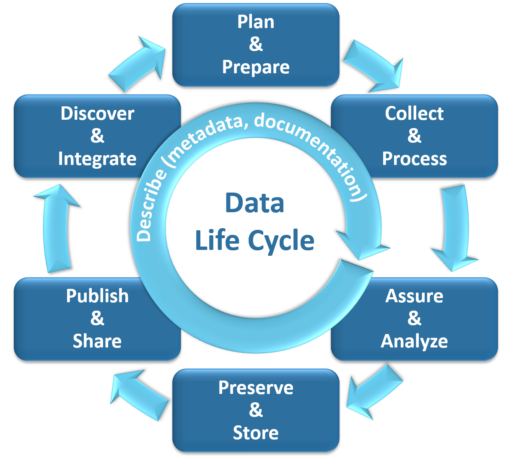

General bioaccumulation data use FAQs
Where can I find California bioaccumulation monitoring data & results?
You can find SWAMP Bioaccumulation Monitoring Program data and associated fish advisories in the Safe to Eat Portal.
SWAMP Bioaccumulation Monitoring Program data can also be found on the California Environmental Data Exchange Network (CEDEN), which is also available on the California Open Data Portal.
Data collected by all California SWAMP Statewide and Regional Monitoring Programs, including the Bioaccumulation Monitoring Program, can be explored and downloaded via the SWAMP Data Dashboard.
What is the entire data management cycle for bioaccumulation monitoring data? Where can I find resources for each phase of the data life cycle?
The SWAMP Bioaccumulation Monitoring Program (Program) considers each phase of the data life cycle to be critical in generating, managing, and maintaining high quality and useful data that is meant to be used by our partners to keep the public informed of which fish are safer to eat in California waterbodies, as well as to protect and restore water quality throughout the state.
Below we highlight where information on each phase of our data life cycle can be found. 
(1) Plan and Prepare
Before the beginning of each survey - and sometimes before each monitoring season - we publish a Monitoring Plan that outlines the scope and focus of that monitoring effort. Moreover the Program also maintains and regularly updates Quality Assurance Program Plans (QAPPs), which describe our project’s goals, data needs and assessment, responsible individuals, quality assurance plan, quality control measures, and reporting deadlines. All monitoring plans, QAPPs and related documents are compiled in the Program's Document Library.
(2) Collect and Process
Our partners at Moss Landing Marine Laboratories' (MLML) Marine Pollution Studies Laboratory (MPSL) lead the sample collection and processing efforts, as described in the associated monitoring plan and QAPP. After each monitoring season, MLML/MPSL developes and shares a Cruise Report, which summarizes the sampling activities that took place that season. All cruise reports and related documents are compiled in the Program's Document Library.
(3) Assure and Analyze
The laboratories we use to analyze our tissue samples have ELAP Accreditation, and undergo a quality assurance and quality control process before submitting data to the SWAMP Information Management and Quality Assurance Center (SWAMP IQ). SWAMP IQ conduct a thorough quality assurance review and verification of the data before adding the data to public data systems.
(4) Preserve and Store
SWAMP IQ reviewed data is stored in the California Environmental Data Exchange Network (CEDEN) database as well as added to the California Open Data Portal.
(6) Discover and Integrate
As one might expect this is an ongoing process. We continuously work with our partners and the STEW to learn from our past efforts and develop recommendations for how the SWAMP Bioaccumulation Monitoring Program might evolve future efforts to ensure the Program continues to generate data and information that can help shape public health and environmental policies to support the preservation, enhancement, and restoration of California’s water resources, and serve the communities that are impacted by consuming contaminated fish and shellfish.
(7) Describe
We describe and document each phase of our process concurrent to the six phases, as described above.